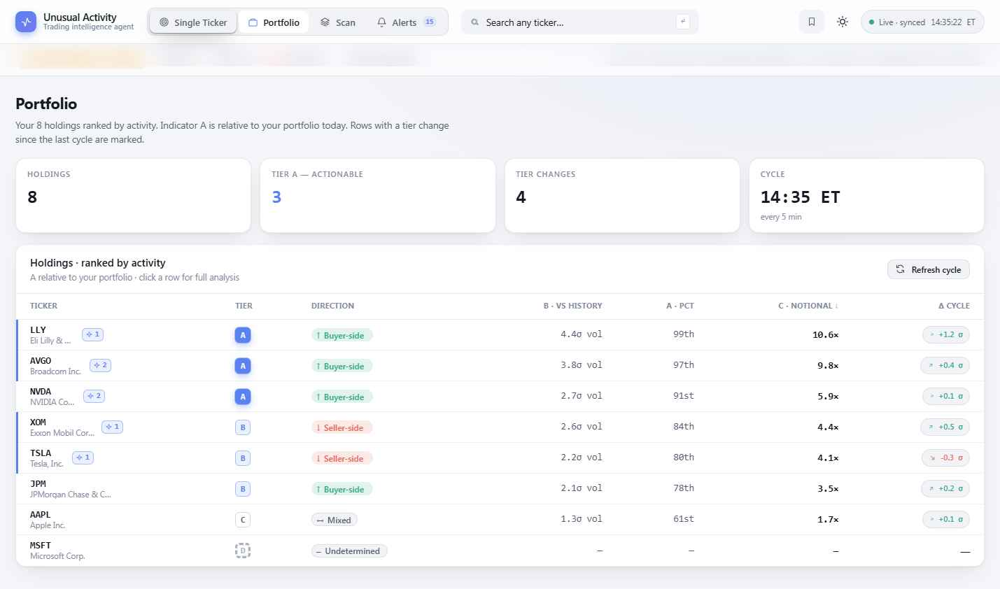

The visual language is "modern fintech": calm, dense, restrained color, monospace for every number. Nothing is hard-coded — color, type, spacing, radius, and elevation are all CSS variables that respond to theme and density. The components below render live from the real product stylesheet.
Theme is set via data-theme on <html>. Every surface, ink level, and border has a matched value in both themes; components reference the token, never a literal. A subtle accent radial sits behind the background in both.

.theme-switching class suppresses transitions for ~60ms during a theme swap so colors don't animate awkwardly. Re-apply this on any runtime theme change.Color carries meaning: accent = the agent / tier A, green = buyer-side, red = seller-side, amber = caution / risk-off. Neutrals do all the structural work. Values shown are the dark theme; light-theme equivalents live in styles.css.
UI text is Spline Sans; every number, ticker, ratio, and code is Spline Sans Mono with tabular figures (font-variant-numeric: tabular-nums) so columns align. Typeface is swappable (Hanken Grotesk / IBM Plex are alternates) but the sans/mono pairing structure is fixed.
text-wrap: pretty on dense paragraphs.| Role | Size | Weight | Family | Notes |
|---|---|---|---|---|
| Display / hero | 46px | 700 | Sans | −0.025em tracking, balance wrap |
| Mode title (h1) | 28px | 700 | Sans | page headers in each mode |
| Card / panel title | 13.5–16px | 600–650 | Sans | BLUF headline 15px |
| Body | 13–15px | 400 | Sans | ink-2, line-height 1.5–1.6 |
| Uppercase label | 10–11px | 700 | Sans | 0.06–0.08em tracking, ink-3 |
| Numbers / metrics | 12–26px | 600 | Mono | tabular-nums, always mono |
| Caption / meta | 11–12px | 400 | Sans/Mono | ink-3 / ink-faint |
A small set of variables drives rhythm, and they shift wholesale across the three densities. Build to the variables — never to a pixel literal — and density "just works".
| Token | Compact | Regular (default) | Comfy | Use |
|---|---|---|---|---|
| --pad | 14px | 20px | 26px | card / row padding |
| --gap | 11px | 16px | 22px | grid & flex gaps |
| --row-h | 38px | 44px | 52px | table row height |
| --radius | 11px | 14px | 16px | cards, panels, drawers |
| --radius-sm | 7px | 9px | 10px | buttons, chips, inputs |
| --fs-base | 14px | 15px | 16px | root font size |
Borders only — most surfaces. --border on --panel.
Cards & raised panels. --shadow — soft, low.
Drawers & modals over the scrim. --shadow-lg.
Radii: corners are generous but not pill-soft — 14px cards, 8–9px controls, 6px micro-chips, 99px only for true pills, dots, and gauges. Scrollbars are 11px, thumb on --border-strong.
Every demo below is rendered with the production component CSS. Each notes its class, variants, and where it appears.
.btn · modifiers .btn-accent .btn-ghost .btn-sm .btn-icon. 34px tall (28 small), 1px press translate, icon at .ic 80% opacity.
| Tier | Class | Meaning | Treatment |
|---|---|---|---|
| A Actionable | .t-a | Clears every gate with independent corroboration | Solid accent fill, glow shadow — only fully-lit state |
| B Review | .t-b | Meets threshold; wants confirmation before acting | Accent-soft fill, accent text, inset ring |
| C Context | .t-c | Elevated activity, below the action gate | Transparent, neutral text, strong inset ring |
| D Suppressed | .t-d | No tier emitted — incomplete / insufficient data | Transparent, faint text, dashed ring |
Sizes: .lg 40px (BLUF/modals/group heads) · default 28px · .sm 22px (tables/feed/rows). word prop renders the labeled line.
.dir-tag (.bull .bear .mixed .undet) encodes signed-flow direction — never price. .band-tag is the anomaly intensity (Elevated → Unusual → Extreme).
Each indicator owns a key color: A amber (#c79a4a), B accent, C neutral. The .na state (55% opacity) shows when A has no universe (single-ticker).
.card / .card-pad for static panels; .ev-card is the collapsible evidence card — clickable head with icon, title/sub, headline metric, rotating chevron, bordered body.
PressureGauge — signed −1…+1 needle on a sell→buy track.
ConfBar — turns red below 50% (low signing confidence).
Plus Sparkline (line + area, optional zero baseline) and VolBars (today vs ghost-baseline bars, colored by hot-ratio) — both pure inline SVG, 240px viewBox, preserveAspectRatio:none to stretch.
Corroboration marks: .yes (green check) / .no (empty) / .warn (amber). Lane dots: ready · loading (pulses) · blocked · disabled. Full 9-state contract in Data & Logic.
A single stroked icon set (~45 glyphs, 1.7 stroke, 24px grid, round caps/joins) defined in ICONS and rendered through one <Icon name size /> component. Multi-path glyphs are split on M commands. Use line icons only — no filled or duotone — except where a fill flag is explicitly passed (e.g. the saved watchlist bookmark).